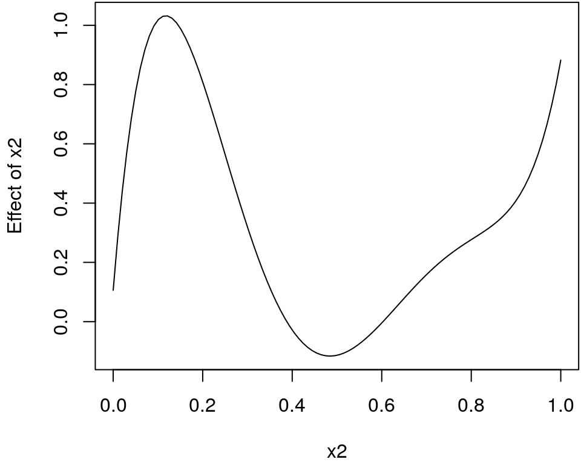
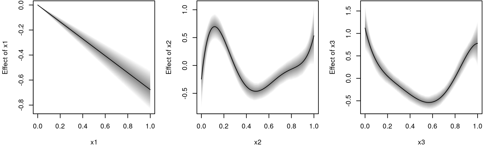

engines.RmdFor the estimation of model parameters the bamlss package provides a flexible infrastructure that allows the user to exchange both, optimization functions for posterior mode estimation (penalized likelihood) and sampling functions for full Bayesian Inference. This goes beyond the common modeling infrastructures that usually allow to create new family objects, only, and can be too restrictive for a couple of applications. Within the unified modeling approach in bamlss it is relatively straightforward to develop new estimation functions (algorithms), e.g., for implementing new models or for efficiency reasons. Such estimation functions could also interface to other software (see, e.g., the sam_JAGS() sampling function). In the following, the basic requirements for optimizer and sampling functions are described in detail.
Estimation engines in bamlss are usually based on the model frame setup function bamlss.frame(), i.e., the functions all have a x argument, which contains all the necessary model and penalty matrices, and a y argument, which is the response (univariate or multivariate). In addition, an estimation engine usually has a family argument, which specifies the model to be estimated. However, this is not a mandatory argument, i.e., one could write an estimation function that is designed for one specific problem, only.
The modeling setup is best explained by looking at the main estimation engines provided by bamlss. The default optimizer using the bamlss() wrapper function is opt_bfit(), which is a backfitting routine. The most important arguments are
The default sampling engine in bamlss is sam_GMCMC(), again the most important arguments are
So basically, the arguments of the optimizer and the sampling function are the same, the main difference is the return value. In bamlss optimizer functions usually return a vector of estimated regression coefficients (parameters), while sampling functions return a matrix of parameter samples of class "mcmc" or "mcmc.list" (for details see the documentation of the coda package). Also note that there is naming convention, optimizer functions start with prefix opt_* and sampler functions with sam_*.
Internally, what the optimizer or sampling function is actually processing is not important for the bamlss() wrapper function as long as a vector or matrix of parameters is returned. For optimizer functions the return value needs to be named list with an element "parameters", the vector (also a matrix, e.g., for opt_lasso() and opt_boost() optimizers) of estimated parameters. The most important requirement to make use of all extractor functions like summary.bamlss(), predict.bamlss(), plot.bamlss(), residuals.bamlss(), etc., is to follow the naming convention of the returned estimates. The parameter names are based on the names of the distribution parameters as specified in the family object. For example, the family object gaussian_bamlss() has parameter names "mu" and "sigma"
## [1] "mu" "sigma"Then, each distributional parameter can be modeled by parametric (linear) and nonlinear smooth effect terms. The parametric part is indicated with "p" and the smooth part with "s". The names of the parametric coefficients are the names of the corresponding model matrices as returned from bamlss.frame(). E.g., if two linear effects, “x1” and "x2", enter the model for distributional parameter "mu", then the final names are "mu.p.x1" and "mu.p.x2". Similarly for the smooth parts, if we model a variable "x3" using a regression spline as provided by the s() function of the mgcv package, the name is based on the names that are used by bamlss.frame() for the smooth.construct() object. In this case the parameter names start with "mu.s.s(x3)". If this smooth term has 10 regression coefficients, then the final name must be
## [1] "mu.s.s(x3).b1" "mu.s.s(x3).b2" "mu.s.s(x3).b3" "mu.s.s(x3).b4"
## [5] "mu.s.s(x3).b5" "mu.s.s(x3).b6" "mu.s.s(x3).b7" "mu.s.s(x3).b8"
## [9] "mu.s.s(x3).b9" "mu.s.s(x3).b10"i.e., all smooth term parameters are named with “b” and a numerated.
In the following, to explain the setup and the naming convention of estimation engines in more detail, we implement
lm() function,For illustration, the family object is kept very simple, we only model the mean function in terms of covariates.
lm_bamlss <- function(...) {
f <- list(
"family" = "LM",
"names" = "mu",
"links" = "identity",
"d" = function(y, par, log = FALSE) {
sigma <- sqrt(sum((y - par$mu)^2) / (length(y) - .lm_bamlss.p))
dnorm(y, mean = par$mu, sd = sigma, log = log)
},
"p" = function(y, par, ...) {
sigma <- sqrt(sum((y - par$mu)^2) / (length(y) - .lm_bamlss.p))
pnorm(y, mean = par$mu, sd = sigma, ...)
}
)
class(f) <- "family.bamlss"
return(f)
}Now, for setting up the estimation functions we first simulate some data using the GAMart() function, afterwards the necessary "bamlss.frame" can be created with
## Simulate some data.
d <- GAMart()
## Setup a "bamlss.frame" object, that is used for
## developing the estimation functions for the linear model.
bf <- bamlss.frame(num ~ x1 + x2, data = d, family = "lm")
## Print the structure of the "bamlss.frame".
print(bf)## 'bamlss.frame' structure:
## ..$ call
## ..$ model.frame
## ..$ formula
## ..$ family
## ..$ terms
## ..$ x
## .. ..$ mu
## .. .. ..$ formula
## .. .. ..$ fake.formula
## .. .. ..$ terms
## .. .. ..$ model.matrix
## ..$ y
## .. ..$ numAs noted above, the object is a named list with elements "x" and "y", which will be passed to the estimation functions. For the moment, since we only implement a linear model, we need to work with the linear model matrix that is part of the bf object.
## (Intercept) x1 x2
## 1 1 0.2875775 0.35360608
## 2 1 0.7883051 0.36644144
## 3 1 0.4089769 0.28710013
## 4 1 0.8830174 0.07997291
## 5 1 0.9404673 0.36545427
## 6 1 0.0455565 0.17801381and the response "y"
## num
## 1 0.341704542
## 2 -0.373302161
## 3 0.007432787
## 4 0.163871126
## 5 -0.096522673
## 6 0.505487688to setup the optimizer function with:
## Linear model optimizer function.
opt_LM <- function(x, y, ...)
{
## Only univariate response.
y <- y[[1L]]
## For illustration this is easier to read.
X <- x$mu$model.matrix
## Estimate model parameters.
par <- drop(chol2inv(chol(crossprod(X))) %*% crossprod(X, y))
## Set parameter names.
names(par) <- paste0("mu.p.", colnames(X))
## Return estimated parameters and fitted values.
rval <- list(
"parameters" = par,
"fitted.values" = drop(X %*% par),
"edf" = length(par),
"sigma" = drop(sqrt(crossprod(y - X %*% par) / (length(y) - ncol(X))))
)
## Set edf within .GlobalEnv for the
## loglik() function in the lm_bamlss() family.
.lm_bamlss.p <<- length(par)
return(rval)
}This optimizer function can already be used with the bamlss() wrapper function and all extractor functions are readily available.
## Model formula with polynomial model terms.
f <- num ~ x1 + poly(x2, 5) + poly(x3, 5)
## Estimate model with new optimizer function.
b <- bamlss(f, data = d, family = "lm", optimizer = opt_LM, sampler = FALSE)
## Summary output.
summary(b)##
## Call:
## bamlss(formula = f, family = "lm", data = d, optimizer = opt_LM,
## sampler = FALSE)
## ---
## Family: LM
## Link function: mu = identity
## *---
## Formula mu:
## ---
## num ~ x1 + poly(x2, 5) + poly(x3, 5)
## -
## Parametric coefficients:
## parameters
## (Intercept) 0.344
## x1 -0.677
## poly(x2, 5)1 -1.138
## poly(x2, 5)2 2.575
## poly(x2, 5)3 0.966
## poly(x2, 5)4 -1.504
## poly(x2, 5)5 1.201
## poly(x3, 5)1 -0.214
## poly(x3, 5)2 4.446
## poly(x3, 5)3 0.200
## poly(x3, 5)4 -0.052
## poly(x3, 5)5 -0.627
## ---
## Optimizer summary:
## -
## edf = 12 sigma = 0.2469
## ---## Predict for term x2.
nd <- data.frame("x2" = seq(0, 1, length = 100))
nd$p <- predict(b, newdata = nd, term = "x2")Plot the estimated effect of x2.

The next step is to setup a full Bayesian MCMC sampling function. Fortunately, if we assume multivariate normal priors for the regression coefficients and an inverse Gamma prior for the variance, a Gibbs sampler with multivariate normal and inverse Gamma full conditionals can be created. The MCMC algorithm consecutively samples for \(t = 1, \ldots, T\) from the full conditionals \[ \boldsymbol{\beta}^{(t)} | \cdot \sim N\left(\boldsymbol{\mu}_{\boldsymbol{\beta}}^{(t - 1)}, \boldsymbol{\Sigma}_{\boldsymbol{\beta}}^{(t - 1)}\right) \] and \[ {\sigma^2}^{(t)} | \cdot \sim IG\left({a^{\prime}}^{(t - 1)}, {b^{\prime}}^{(t - 1)}\right), \] where \(IG( \cdot )\) is the inverse Gamma distribution for sampling the variance parameter. The covariance matrix for \(\boldsymbol{\beta}\) is given by \[ \boldsymbol{\Sigma}_{\boldsymbol{\beta}} = \left(\frac{1}{\sigma^2}\mathbf{X}^\top\mathbf{X} + \frac{1}{\sigma^2}\mathbf{M}^{-1}\right)^{-1} \] and the mean \[ \boldsymbol{\mu}_{\boldsymbol{\beta}} = \boldsymbol{\Sigma}_{\boldsymbol{\beta}} \left(\frac{1}{\sigma^2}\mathbf{X}^\top\mathbf{y} + \frac{1}{\sigma^2}\mathbf{M}^{-1}\mathbf{m}\right), \] where \(\mathbf{m}\) is the prior mean and \(\mathbf{M}\) the prior covariance matrix. Similarly, for \(\sigma^2\) paramaters \(a^{\prime}\) and \(b^{\prime}\) are computed by \[ a^{\prime} = a + \frac{n}{2} + \frac{p}{2} \] and \[ b^{\prime} = b + \frac{1}{2}(\mathbf{y} - \mathbf{X}\boldsymbol{\beta})^\top(\mathbf{y} - \mathbf{X}\boldsymbol{\beta}) + \frac{1}{2} (\boldsymbol{\beta} - \mathbf{m})^\top \mathbf{M}^{-1}(\boldsymbol{\beta} - \mathbf{m}), \] where \(a\) and \(b\) are usually set small, e.g., with \(a = 1\) and \(b = 0.0001\), such that the prior is flat and uninformative.
We can implement the MCMC algorithm in the following sampling function
sam_LM <- function(x, y, start = NULL,
n.iter = 12000, burnin = 2000, thin = 10,
m = 0, M = 1e+05,
a = 1, b = 1e-05,
verbose = TRUE, ...)
{
## How many samples are saved?
itrthin <- seq.int(burnin, n.iter, by = thin)
nsaves <- length(itrthin)
## Only univariate response.
y <- y[[1L]]
## For illustration this is easier to read.
X <- x$mu$model.matrix
## Again, set edf within .GlobalEnv for the
## loglik() function in the lm_bamlss() family.
.lm_bamlss.p <<- ncol(X)
## Number of observations and parameters.
n <- length(y)
p <- ncol(X)
## Matrix saving the samples.
samples <- matrix(0, nsaves, p + 1L)
## Stick to the naming convention.
pn <- paste0("mu.p.", colnames(X))
colnames(samples) <- c(
pn, ## Regression coefficients and
"sigma" ## variance samples.
)
## Setup coefficient vector,
## again, use correct names.
beta <- rep(0, p)
names(beta) <- pn
sigma <- sd(y)
## Check for starting values obtained,
## e.g., from lm.opt() from above.
if(!is.null(start)) {
sn <- names(start)
for(j in names(beta)) {
if(j %in% sn)
beta[j] <- start[j]
}
}
## Process prior information.
m <- rep(m, length.out = p)
if(length(M) < 2)
M <- rep(M, length.out = p)
if(!is.matrix(M))
M <- diag(M)
Mi <- solve(M)
## Precompute cross products.
XX <- crossprod(X)
Xy <- crossprod(X, y)
## Inverse gamma parameter.
a <- a + n / 2 + p / 2
## Start sampling.
ii <- 1
for(i in 1:n.iter) {
## Sampling sigma
b2 <- b + 1 / 2 * t(y - X %*% beta) %*% (y - X %*% beta) +
1 / 2 * t(beta - m) %*% Mi %*% (beta - m)
sigma2 <- sqrt(1 / rgamma(1, a, b2))
## Sampling beta.
sigma2i <- 1 / sigma2
Sigma <- chol2inv(chol(sigma2i * XX + sigma2i * Mi))
mu <- Sigma %*% (sigma2i * Xy + sigma2i * Mi %*% m)
beta <- MASS::mvrnorm(1, mu, Sigma)
if(i %in% itrthin) {
samples[ii, pn] <- beta
samples[ii, "sigma"] <- sqrt(sigma2)
ii <- ii + 1
}
if(verbose) {
if(i %% 1000 == 0)
cat("iteration:", i, "\n")
}
}
## Convert to "mcmc" object.
samples <- as.mcmc(samples)
return(samples)
}The new estimation function can be directly used with the bamlss() wrapper.
## iteration: 1000
## iteration: 2000
## iteration: 3000
## iteration: 4000
## iteration: 5000
## iteration: 6000
## iteration: 7000
## iteration: 8000
## iteration: 9000
## iteration: 10000
## iteration: 11000
## iteration: 12000##
## Call:
## bamlss(formula = f, family = "lm", data = d, optimizer = opt_LM,
## sampler = sam_LM)
## ---
## Family: LM
## Link function: mu = identity
## *---
## Formula mu:
## ---
## num ~ x1 + poly(x2, 5) + poly(x3, 5)
## -
## Parametric coefficients:
## Mean 2.5% 50% 97.5% parameters
## (Intercept) 0.34266 0.25210 0.34404 0.43398 0.344
## x1 -0.67663 -0.83607 -0.67868 -0.51842 -0.677
## poly(x2, 5)1 -1.16063 -2.14553 -1.15465 -0.18250 -1.138
## poly(x2, 5)2 2.57868 1.62209 2.53665 3.59880 2.575
## poly(x2, 5)3 0.96045 -0.03651 0.93142 2.04981 0.966
## poly(x2, 5)4 -1.53098 -2.51014 -1.53724 -0.56032 -1.504
## poly(x2, 5)5 1.22170 0.16292 1.21515 2.25903 1.201
## poly(x3, 5)1 -0.22651 -1.23437 -0.23804 0.81036 -0.214
## poly(x3, 5)2 4.44452 3.47117 4.44133 5.36844 4.446
## poly(x3, 5)3 0.18622 -0.80221 0.15864 1.20329 0.200
## poly(x3, 5)4 -0.05343 -1.07788 -0.04423 0.91396 -0.052
## poly(x3, 5)5 -0.62407 -1.57591 -0.61765 0.29915 -0.627
## ---
## Sampler summary:
## -
## DIC = 105.5531 pd = 48.6458 runtime = 2.438
## ---
## Optimizer summary:
## -
## edf = 12 sigma = 0.2469
## ---## Predict for all terms including 95% credible intervals
nd$x1 <- nd$x3 <- seq(0, 1, length = 100)
for(j in c("x1", "x2", "x3"))
nd[[paste0("p", j)]] <- predict(b, newdata = nd, term = j, FUN = c95, intercept = FALSE)The estimated effects can be plotted with.
par(mfrow = c(1, 3))
plot2d(px1 ~ x1, data = nd)
plot2d(px2 ~ x2, data = nd)
plot2d(px3 ~ x3, data = nd)
Umlauf, Nikolaus, Nadja Klein, Achim Zeileis, and Thorsten Simon. 2019. bamlss: Bayesian Additive Models for Location Scale and Shape (and Beyond). https://CRAN.R-project.org/package=bamlss.